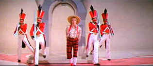

| S.O.B./ C+, B+ |
| Warner/1981/121/ANA 2.35 |
What starts with a potent shot of darn funny
black comedy turns into too much of a personal sandbox for writer/director
Blake Edwards. No doubt this satire of the Hollywood movie-making machine
contains comic kernels might provide some delightful irritation for the
Hollywood "in the knows," but it struck me as mostly
self-indulgent.
Producer Felix Farmer, a perennial money-making
producer for his studio, steps into quicksand with his latest film, a
family entertainment starring his saccharine movie star wife Sally Miles.
Through into dark depression, Felix tries seven varieties of suicide while
a wild party rages on at his beach house. There are dead bodies, mad men,
guns ablaze, collapsing floors, and enough booze to float James Cameron's
replica of the Titanic. The beach house party contains some good
sight-gags, but it falls far below the normal Edwards laugh quotient.
 |
|
Julie Polly Waddle Doodles. ©Warner |
Julie Andrews gets to do a couple of songs and
struts her way through two boring versions of Polly Waddle Doodle All
Day, but the famous scene when she bares her breasts didn't send
Hollywood into a dither twenty-odd years ago; it actually provides more
laughs today in light of the lax screen mores practiced in today's cinema.
It's William Holden's last film role, and though he's weather-beaten by
the years and the booze as director Tim Cully, Holden's star quality
stands up to the chaotic script. Robert Preston, warming up for his grand
performance under Edwards Victor
Victoria, has some early funny moments as Dr. Irving Finegarten,
shot-meister to the stars, but he runs out of B-12 early on. Richard
Mulligan is a wild man as Felix.
Warners gets the most from the film elements on S.O.B.
The image is clean and color holds up very well. Color saturation is good
with accurate skin tones. It's a sharp DVD with only slight high peak
transition artifacts. Blacks are deep, and shadow detail, what there is of
it, is very good. Overall light output is excellent. Dolby Digital one
track mono sound delivers competently clean sound.

Selections from the Feature
Archive include articles on Akira Kurosawa, Blonde Bimbos, Frank Darabont, Steven Culp, John Herzfeld or Vietnam: The Hollywood Pariah, and many
more....
Nobody's
Perfect

Billy Wilder left movie lovers a legacy of cinematic treasure. From
defining Film Noir to outrageous comedy, writer/director Wilder delivered
the goods with consummate style.

The Movie Poster Archive includes extensive poster images from the films of stars like Susan Hayward, Kirk Douglas, Katharine Hepburn and many more. Our featured star is William Holden.


Manufacturer of computer-video interfaces, switchers, distribution
amplifiers, computer-video scan converters, and high resolution cable.
Found in many high end home theater systems.
MRQE
Find reams of movie and DVD reviews at the Movie Review Query
Engine, a index of reviews appearing on the Internet.
 The Argonaut
Foundation is involved in promoting film, film score, and movie
location restoration. They are currently involved in promoting the
restoration of the site for John Wayne's The Alamo. For more information,
click on the picture of the Duke.
The Argonaut
Foundation is involved in promoting film, film score, and movie
location restoration. They are currently involved in promoting the
restoration of the site for John Wayne's The Alamo. For more information,
click on the picture of the Duke.